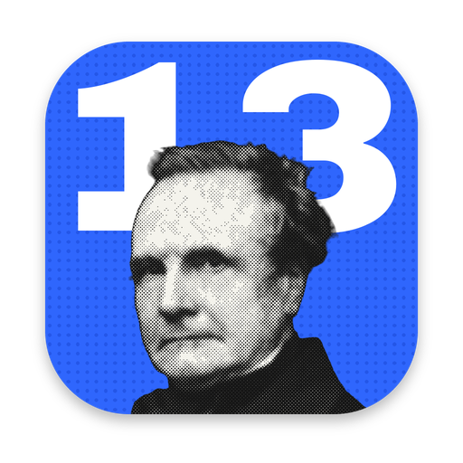
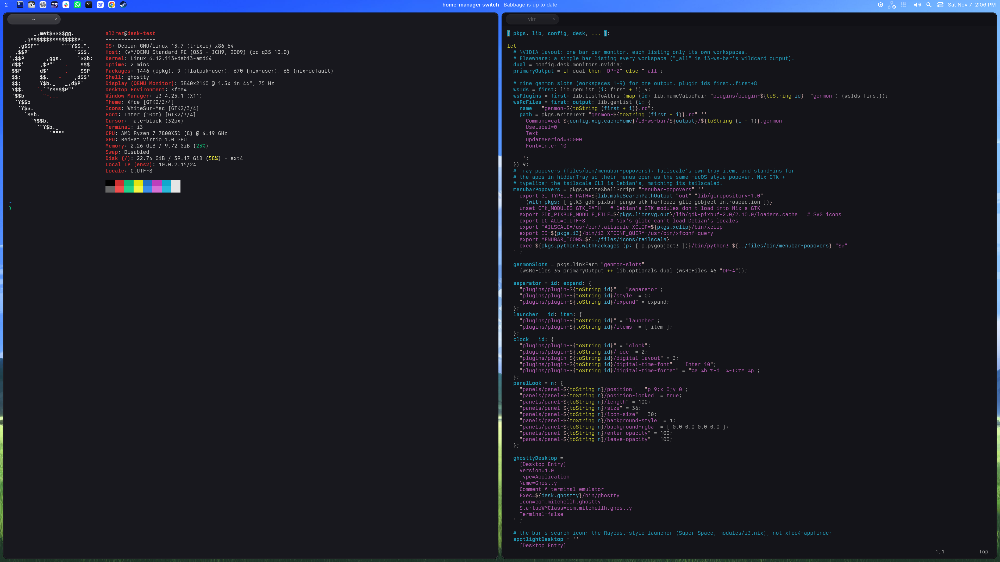

Babbage
An opinionated desktop for
XFCE running i3 tiling, one flat menu bar, Ghostty, and notifications that slide into the bar. One command takes a fresh Debian install there, built with a Nix Home Manager flake.
FEATURES
- One flat bar. Workspaces, pinned apps, tray and clock in a single bar; each monitor gets its own bar with its own workspaces.
- Dock-like pins. A click focuses the app wherever it is or starts it; a double-click opens a new window.
- Launcher. A minimal Raycast-style launcher on Super+Space, with the apps you open most first.
- Clipboard history. Text, links, colors and images on Super+Shift+V, with a preview and paste back into the app you were in.
- Light by day, dark by night. Adwaita from 07:00, Adwaita-dark from 19:00; GTK, Chrome, Electron and Ghostty follow.
- Quiet notifications. One line of text in the middle of the bar, slid in and out by picom, which also draws the window edges.
- Ghostty, set up. Tabs, padding, light and dark themes, and a subtle curved-screen shader.
- Built with Nix. A Home Manager flake on Debian; one command reproduces the whole desktop, with Tailscale and 1Password ready.

INSTALL
Download the ISO, write it to a USB stick, boot it (UEFI, Secure Boot off), answer the questions. The first login finishes Babbage over the internet.
ALREADY ON DEBIAN 13?
git clone https://github.com/al3rez/babbage ~/.config/home-manager ~/.config/home-manager/bootstrap.sh generic
Requires Debian 13 (trixie) with internet access. Log out and back in when it finishes.
FAQ
Why Debian and Nix?
Debian underneath for drivers and apt apps; a Nix Home Manager flake for the desktop on top. One command reproduces it on a fresh install.
Does it work on NVIDIA?
The ISO and the generic profile use Mesa. The NVIDIA profile is tuned for the author's own desk; on other NVIDIA machines, install the driver from Debian's non-free repository.
Which apps come with it?
Ghostty, Grok Bot, ChatGPT, T3 Code, Slack, WhatsApp, LINE, DeepSeek Harness, Chrome and Steam, pinned on the bar; Telegram and Hex live in the tray.
Is it free?
The Babbage configuration is open source on GitHub. Some pinned apps, such as 1Password, Slack, Chrome and Steam, are proprietary and install from their vendors' own repositories.